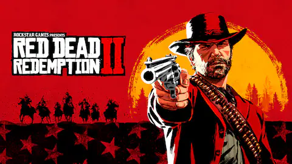
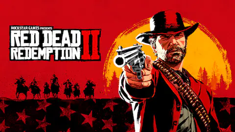

Smile 2 é um filme de terror psicológico sobrenatural de 2024 escrito e dirigido por Parker Finn. Uma sequência direta de Smile (2022), o filme tem estrelando Naomi Scott como uma pop star que começa a viver uma série de eventos perturbadores enquanto está prestes a sair em uma turnê. Também compõem o elenco Rosemarie DeWitt, Lukas Gage, Miles Gutierrez-Riley, Peter Jacobson, Ray Nicholson, Dylan Gelula, e Raúl Castillo, além de Kyle Gallner reprisar seu papel do primeiro filme.
| Data de lançamento: | 18 de outubro de 2024 |
| Diretor: | Parker Finn |
| Companhia(s) produtora(s): | Temple Hill Entertainment; Bad Feeling |
| Lançamento: | 17 de outubro de 2024 (Brasil/Portugal); 18 de outubro de 2024 (Estados Unidos) |
| Orçamento: | US$ 28 milhões |
Naruto (ナルト) é uma série de mangá escrita e ilustrada por Masashi Kishimoto, que conta a história de Naruto Uzumaki, um jovem ninja que constantemente procura por reconhecimento e sonha em se tornar Hokage, o ninja líder de sua vila. A história é dividida em duas partes, a primeira parte se passa nos anos da pré-adolescência de Naruto, e a segunda parte se passa em sua adolescência. A série é baseada em dois mangás one-shots de Kishimoto: Karakuri (1995), e que por causa dele Kishimoto ganhou uma menção honrosa no prêmio Hop Step da Shueisha no ano seguinte, e Naruto (1997). A editora Panini Comics licenciou e publicou o mangá em três versões no Brasil, e em Portugal é a editora Devir Manga quem licencia e publica o mangá. A história de Naruto continua com o seu filho, Boruto Uzumaki em Boruto: Naruto Next Generations.
 

.gif)